We designed and developed a book recommendation system that recommends the next few books for our target users based on their own reading tastes.

Project Description
Executive Summary
In this project, we designed and developed a book recommendation system that recommends the next few books for our target users based on their own reading tastes. Here is the current version app: edaxplor.shinyapps.io/book_v4. The data source we used comes from the UCSD Book Graph website, and a Book Recommender Project from Kaggle. Considering the scope of our project, and our target users to be mainly children younger than 15 years old, and educators of children at that age group, we mainly used two datasets from the websites: a book dataset of the fantasy and children's books genre and a rating dataset with users' ratings of the books. A logistic and linear regression model was tested for the global test of model adequacy and showed some linear relationship between the variables.
To figure out the best algorithm for our product, we analyzed and compared the datasets using both supervised and unsupervised learning. From the results of the analysis, it showed that the unsupervised learning methods performed better than the supervised learning ones. Among the different supervised learning techniques we implemented, the linear model — fast and frugal tree — outperforms other models including the generalized linear model and the non-linear model xgboost. We included the details of our analysis in the model interpretation section. In terms of unsupervised learning, we found that the collaborative filtering clustering method fit the goal of our project the most. Other clustering methods we implemented include dimension reduction techniques with UMAP and K-means. Eventually, we used the UBCF algorithm to make recommendations to our users based on their own preferences of the books, and we captured the main idea of the book with TF-IDF analysis on the book descriptions.
As a result, a book recommender was developed as a Shiny app in R, built with genre and rating filters. After users select their favorite genre and rate books that they have read, the model gives a suggestion of 3 books. Also, as a reference, a text cloud is drawn to see which words are frequently used in the book.
It is not an easy job to recommend to others what book to read because people spend their money to buy a book and spend their time reading it. There are some helpers to suggest the next book that readers might like, such as best-selling books displayed for different genres in bookstores, and searching and reading others' reviews online. It might help people decide on a book they might like, but it is not always true. Since every person has their own reading tastes, picking a book that they might like takes time. To save their time and make their decision easier, the book recommendation system is introduced to propose a recommendation algorithm that can save them from all the pains of searching online, reading all the reviews, and comparing with their tastes.
In this project, a book recommendation algorithm is built with two genres: children's books and fantasy books. Therefore, any person who would like to read a new book — especially fantasy lovers, children, their parents, and educators who teach children under the age of 15 — is a target for this application.
Data Sources & Preprocessing
Data Set
To develop the application, we used four datasets. The main data set used to develop the model is the Genre dataset. The dataset was collected in late 2017 from goodreads.com with several files updated in May 2019. It has 26 columns and 1,242 rows: book_id, authors, average_rating, goodreads_book_id, country_code, description, format, image_url, is_ebook, isbn, isbn13, language_code, link, num_pages, publication_year, publisher, ratings_count, series, similar_books, title, title_without_series, URL, and work_id.
Then, 3 datasets — ‘ratings.csv’ (3 columns, 194,941 rows: book_id, user_id, rating), ‘book_tags.csv’ (3 columns, 999,912 rows: goodreads_book_id, tag_id, count), and ‘tags.csv’ (2 columns, 34,252 rows: tag_id, tag_name) — contributed by Philipp Spachtholz on Kaggle, were combined as one rating dataset. The combined rating data set has the same column name, “book_id”, as the genre dataset, so the two datasets can be used together to build the book recommendation application.
Data Analysis
The values of review ratings can be biased because people tend to rate when they are really satisfied or when they are disappointed. The values of ratings are the most important values for a recommendation application since people get suggestions with the highly-rated books first. Before starting to create the algorithm, a distribution plot was drawn to check if the dataset is biased with average rating. Figure 1 shows that the data set is approximately normally distributed with an average of 3.90, so the values of average rating are not biased.
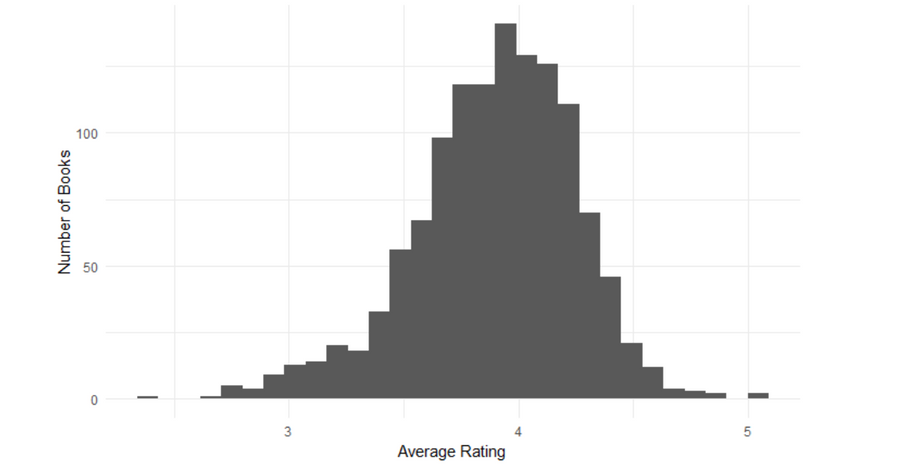
Figure 1. Distribution plot of average rating
Then, a logistic regression model was used because the response variable, the genre, is binary; the model checks if there is any relationship between the dependent variable (genre) and independent variables (average rating, number of pages, publication year, rating count, text reviews count, and title length). Using the glm function in R, a model was retrieved as in Figure 2.
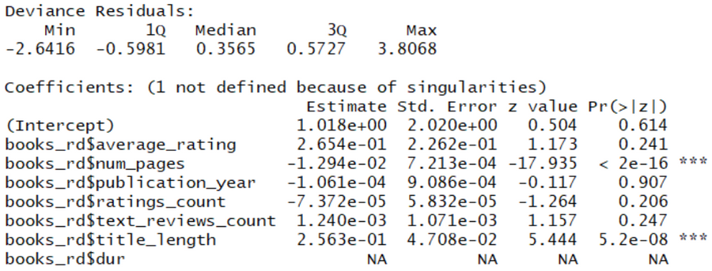
Figure 2. Summary of logistic regression
Since the z-value for the number of pages and title length variables is very small, the coefficients of the two variables are significant. It explains the dataset well because the dependent variable is the two genres — the average number of pages of children's books is not supposed to be as high as adult books, and the average title length of children's books is 25% more than fantasy books.
Next, the model was checked against the normality assumption by looking at the normal probability plot. Figure 3 shows the normal probability plot of residuals, and the normal distribution is shown.
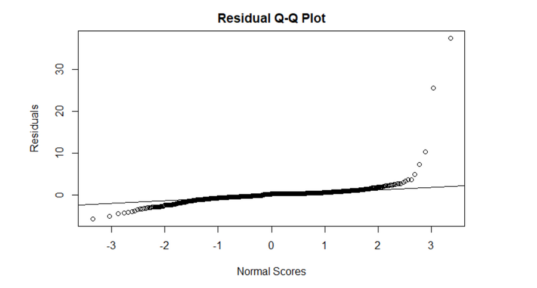
Figure 3. Q-Q plot of residuals for logistic regression
This dataset will be used for an online recommendation system, so the average rating of books would be the most significant variable. A linear regression model was conducted on average rating versus other variables to check relationships between variables and the average rating. Since average rating is a numeric value, a multiple linear regression model was used.
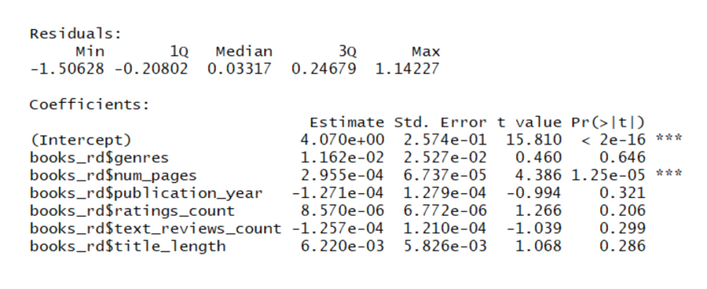
Figure 4. Summary of linear regression
Since the p-value for the number of pages variable is very small, the coefficient of the variable is significant, concluding that the number of pages has a linear relationship with the average rating. Then we checked if the model meets the normality assumption by looking at the normal probability plot in Figure 5. All of the points follow the straight line in the plot, indicating the residuals follow a normal distribution.
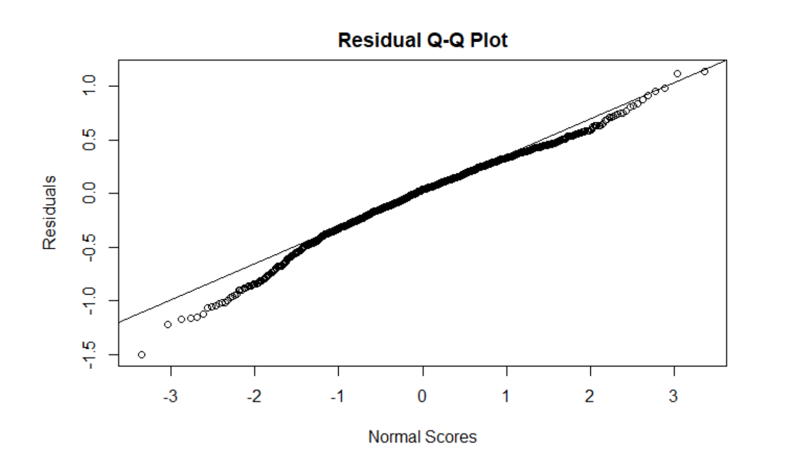
Figure 5. Q-Q plot of residuals for linear regression
Preprocessing of data
The data was processed in order to suit the machine learning algorithms better: binary encoding of categorical variables, scaling of variables, and removal of missing values and columns with NA values.
Collaborative Filtering
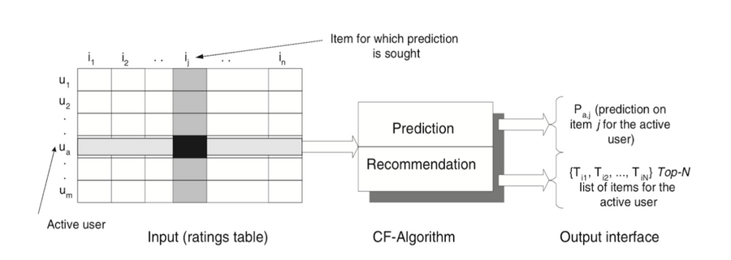
Figure 6. The collaborative filtering process
We chose collaborative filtering because it is widely used for recommendations. It assumes that if a person A has the same opinion as a person B on an issue, A is more likely to have B's opinion on a different issue than that of a randomly chosen person.
Figure 6 illustrates how CF works. First, you make a matrix in a certain format — columns represent items and rows represent users. Then put this matrix into CF algorithms and get recommendations. (Source: Item-Based Collaborative Filtering Recommendation Algorithms.) We followed 3 steps for the recommendation, referencing the process from Kaggle's book recommendation example: data processing and exploration, finding user neighbors, and recommendations.
The first step is data processing and exploration. In this stage, we removed the duplicate ratings and then removed users who rated fewer than 3 books. Then we selected a subset of users for fast calculations, and explored the cleaned data set — title lengths with 5 or 7 words have slightly higher ratings. After that, we looked at which books are top-rated books and popular books. Next, we made a matrix for the CF algorithm.
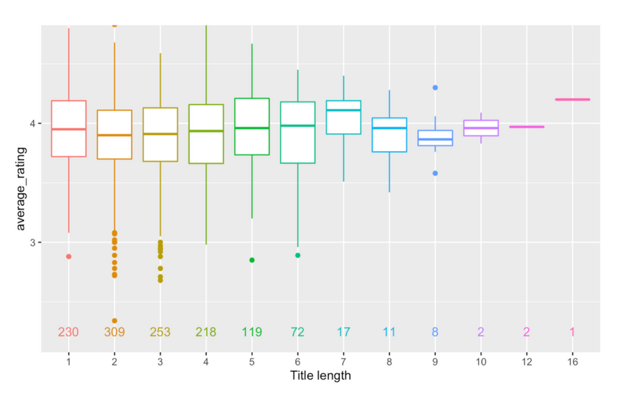
Figure 7. Exploratory data analysis
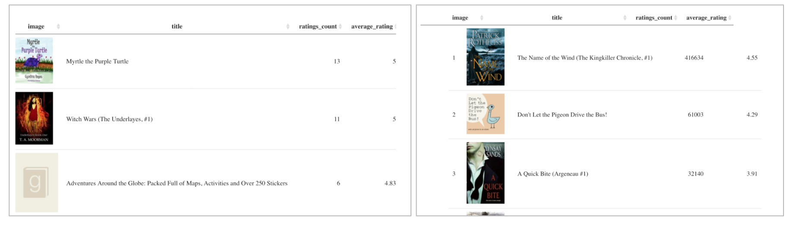
Figure 8. Top 10 top-rated books and top 10 popular books
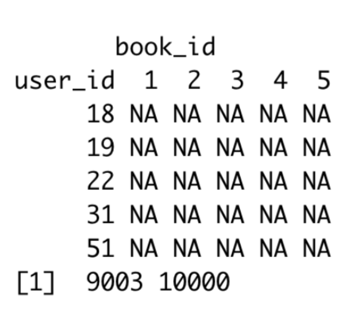
Figure 9. Matrix for UBCF
The second step is finding user neighbors. In this stage, we found similar users by comparing common books they liked. In this case, we set our current user as 794 and then found users who gave ratings to the same books. Then we normalized the users' ratings and sorted users according to similarity. For this, the Pearson correlation was used. Figure 11 shows similarities between the current user and 30 random users (plotted with qgraph).
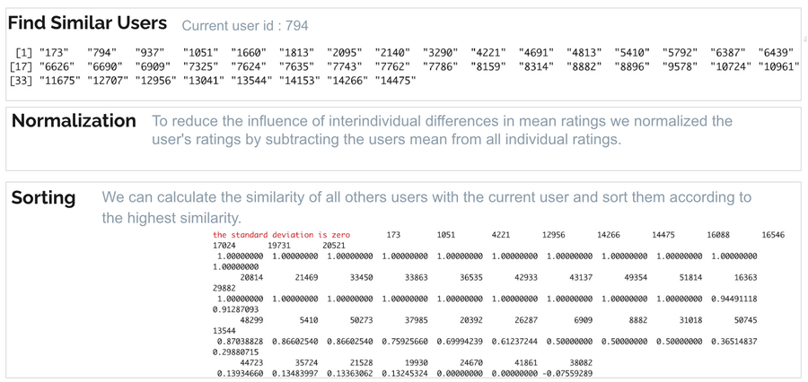
Figure 10. Finding user neighbors process
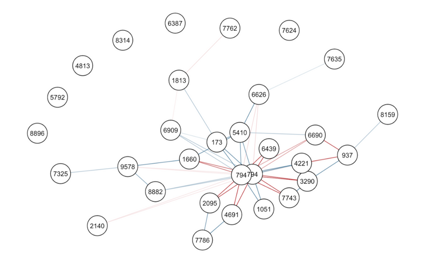
Figure 11. Similarities between users
Finally, in step three, based on similar users, the algorithm can recommend books that best fit the target user.
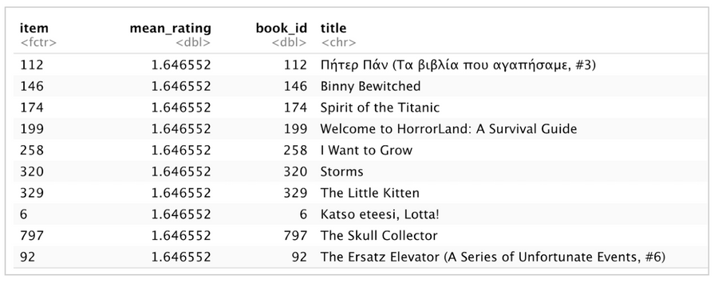
Figure 12. Best recommendations for the user
Model Interpretation and Explanation
Supervised Learning
To select the most suitable techniques for our project, we implemented both supervised and unsupervised techniques to investigate how well they perform on the dataset. The datasets we used contain different kinds of data — categorical, interval, ratio, and text — with more categorical data than other types. Therefore, classification models would fit our goal better.
We implemented three types of classification models: Fast and Frugal decision tree analysis, xgboost, and generalized linear model. To measure the performance of each model, an ROC curve was created. As seen in Figure 13, all three supervised models do not have a good performance on the task, with tiny differences. The result suggested that supervised learning might not be the best approach for our project.
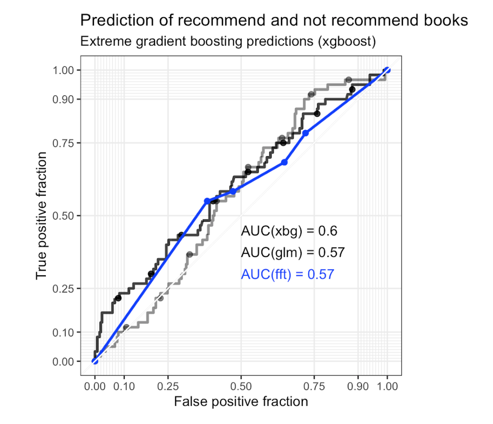
Figure 13. Performance ROC curve
The result from the Fast and Frugal decision tree (Figure 14) indicated that the publication year, page number, genre, and how many times a book was reviewed are the most important variables in deciding whether a book would be recommended to a user.
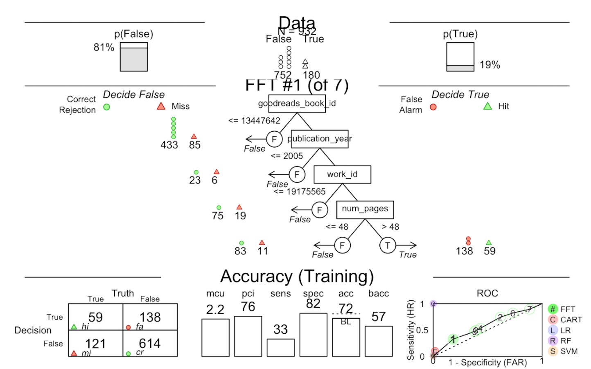
Figure 14. Result from the Fast and Frugal decision tree
On the other hand, glm and xgboost identified rating counts, page numbers, text review counts, together with publication year as the top four important features in their models.
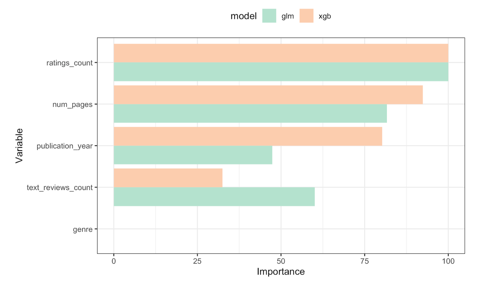
Figure 15. Linear vs. non-linear: glm vs. xgb
Provided that the preliminary analysis from the supervised learning offered some insights into the dataset, these models did not fulfill our goal to recommend the next few books for our target users. Moreover, to run the model, we eliminated a few variables because of the constraints of the data types in certain models. This procedure promoted the efficiency of training and building the model, yet we might have lost potential information in the process as well.
Unsupervised Learning — Cluster Analysis
The nature of our app was to filter and recommend books to the users; one of the state-of-the-art practices in building recommendation filtering systems is to use collaborative filtering algorithms, mostly considered a clustering algorithm. Additionally, unsupervised learning outperformed supervised learning in finding potential existing patterns with different types of data.
The ‘clValid’ package in R was used to carry out clustering on the dataset. Intuitively, the following parameters are the most relevant to users when it comes to recommending the best books — average rating, genre, format, and length of books (number of pages). These features were incorporated in our analysis after preprocessing, which included binary encoding of categorical variables, scaling of the data points, and removal of NA/missing values.
We concluded that K-means clustering would suit our data set better than hierarchical clustering for two main reasons: the size of our dataset was large and binary encoding of variables would increase the number of variables the algorithm would have to deal with; and K-means allows more flexibility with the clusters — if a data point needs to be reassigned to another cluster, doing that would only be possible with a K-means clustering model.
Using the clValid package, a cluster plot using the ‘kmeans’ method was obtained for 11 clusters. We validated 11 as the optimum number of clusters using silhouette and stability validation methods, searching over a range of 2 to 11. The highest silhouette score was associated with 11 clusters (fviz_nbclust plot below).
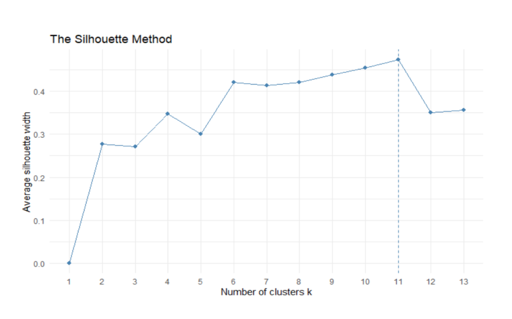
Figure 16. The silhouette method for optimum number of clusters
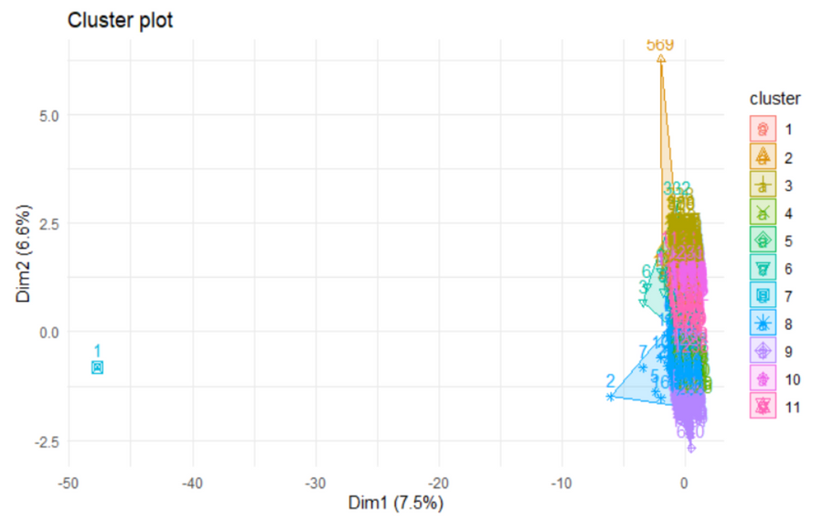
Figure 17. Cluster plot
The clusters obtained are very close to and overlap each other. Dimensionality reduction methods such as UMAP and PCA can help resolve this issue. The UMAP function was used on our dataset to reduce it to two dimensions and produce cleaner and tighter clusters.
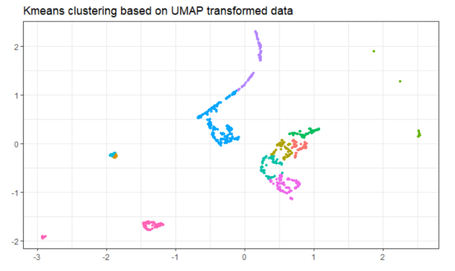
Figure 18. K-means clustering based on UMAP-transformed data
The green points in the plot seem like outliers but they are actually a cluster of 10 points — a deeper analysis revealed they belonged to the “Audio CD” format with lengths varying from 0–10 pages, which seems peculiar as audiobooks should intuitively not have ‘pages’ associated with them.
The ‘kmeans’ function in R can also be used to fit the data. It is less complex and does not offer the same functionality as clValid but, with a little analysis, it allows for more interpretability of the different characteristics within each cluster. Here, the kmeans function was used with 11 clusters, and the data was filtered to obtain data points belonging to cluster 2 — books in the ‘Children's Books’ genre and ‘Board Book’ format.
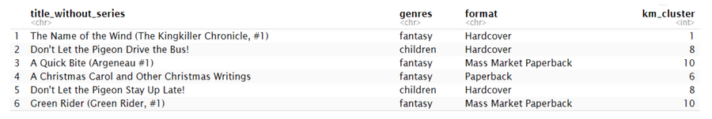
Figure 19. K-means clustering using the ‘kmeans’ function
Collaborative Filtering
Nevertheless, it would not be easy for our app to rank all the books in the same cluster; therefore, the accuracy of the model might be compromised. On top of that, both models used dimension reduction methods, which reduce the interpretability of the models to the audience. There are a few algorithms that proved to be effective, and Riesterer et al. (2020) found how noise levels impact the performance of each algorithm. As they suggested, UBCF and IBCF outperformed MFA in a noisier dataset environment. In our app, the algorithm code contributed by Kaggle has both UBCF and IBCF algorithms. However, it would be better if we could conduct heuristic evaluations on our users to know their experience better.
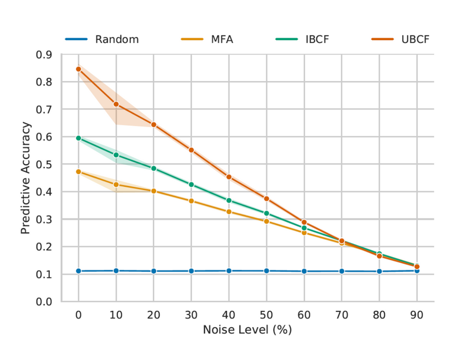
Figure 20. Performance graph: UBCF vs IBCF vs MFA
Text Analysis — TF-IDF Word Cloud
Data: book descriptions. Features: captures some info, fast process. Challenges: different languages, small data set.
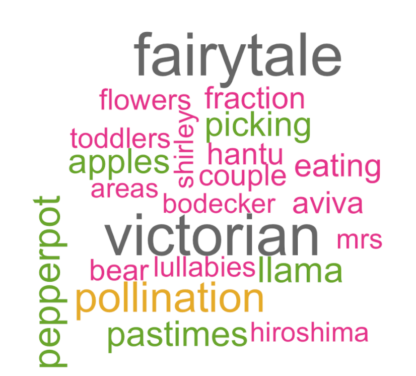
Figure 21. Word cloud example
Application and Conclusions
Basic Prototype
First, we came up with a simple prototype consisting of 3 parts. In the first column, people can choose genres and rate books they like. In the second column, they can filter recommendations. Finally, they can see the recommended books. Using the arrow button, users can see more recommendations. Word clouds are made based on the book description and enable users to understand what the recommended book is about in a short time.
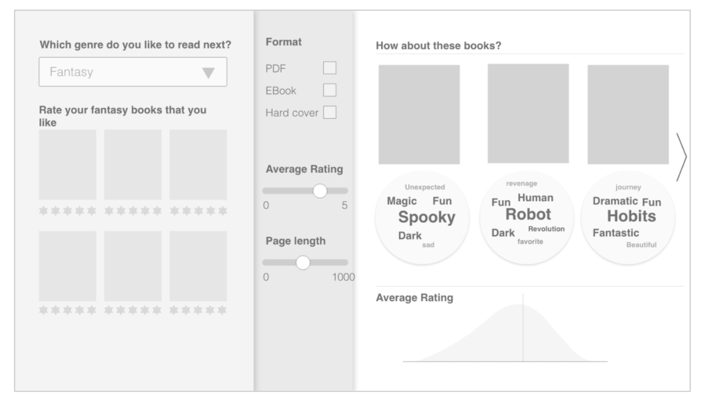
Figure 22. Basic prototype
Demonstration Application
Based on the Shiny R example on Kaggle, we developed two new features: genre selection filtering and a word cloud for recommended books. As we used a different data set consisting of children's books and fantasy books, we made recommendations based on the user's selection of genre. After the user gets a recommendation, they can read word clouds and understand the unique features of the recommended books. You can find the test version here: edaxplor.shinyapps.io/book_v4.
Conclusion
From the demo, we were able to see UBCF works well for book recommendation. However, we think further improvements can be made to the prototype by improving trust and persuasion — points that can be improved in the future. Furthermore, conducting user testing would be an effective method to evaluate our service.
- We used a username plus bookshelf as a title to increase the feeling of a personalized service.
- We separated the user's bookshelf into two parts: a ‘Reading Now’ shelf and a ‘To Read’ shelf. By doing so the algorithm can understand the user's current and future interests.
- By showing other users' bookshelves, we wanted to give users the feeling that this website is a book-reading community. We think we can further add curated book sections for augmented AI-human collaboration.
- Users can Like or Dislike the recommendation. Based on this feedback, the algorithm can reflect the user's preference and apply it to future recommendations.
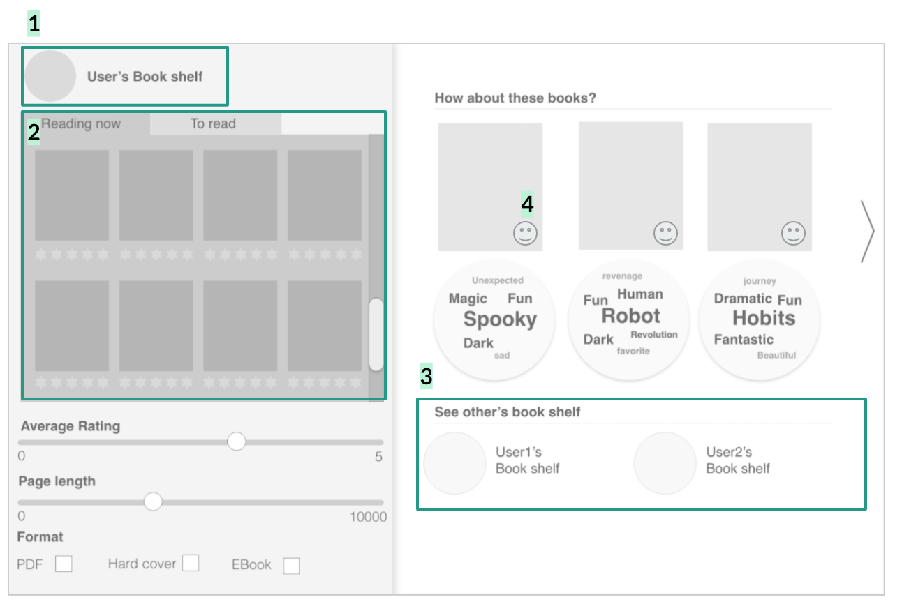
Figure 24. Detailed prototype for future development
References
- Genre Dataset: UCSD Book Graph
- Mengting Wan, Julian McAuley, “Item Recommendation on Monotonic Behavior Chains”, RecSys'18.
- Mengting Wan, Rishabh Misra, Ndapa Nakashole, Julian McAuley, “Fine-Grained Spoiler Detection from Large-Scale Review Corpora”, ACL'19.
- Rating Dataset and Recommendation Algorithms: Kaggle — Book Recommender (Collaborative Filtering, Shiny)
- Riesterer, N., Brand, D., & Ragni, M. (2020). Uncovering the Data-Related Limits of Human Reasoning Research: An Analysis based on Recommender Systems. arXiv:2003.05196.
- Choosing an optimal number of clusters
- Working and benefits of UMAP